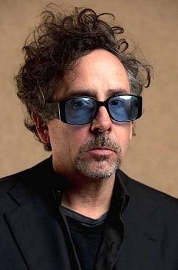
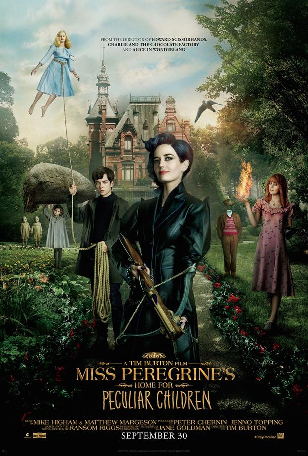
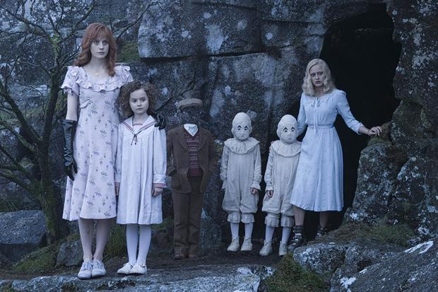

鬼马名导蒂姆·波顿介绍了自己的新片《佩小姐的奇幻城堡》，这又是一部带有独特“波顿”风的奇幻大片。
我们跟蒂姆·波顿见面的地点是伦敦Soho内阳光充足的酒店房间，这位鬼才导演友好地与记者握手，开始了一段愉快的畅谈，并不像想象中那么“高冷”，他的状态轻松且健谈。他的全新作品《佩小姐的奇幻城堡》已经在9月30号于北美公映，开画后口碑一路飘红，并在上周取得了全球票房连冠的好成绩。我们采访他的时候，这一切还没有发生，但从他的言谈中，已经不难发现这部电影成功的秘密。
已过57岁的蒂姆·波顿头发中夹杂着灰白色，但依然神采奕奕，一身黑衣如乌鸦的羽毛，回答每个问题时都伴随着手势动作，就好像是在指挥一场晦涩的交响乐，是那种随便聊聊就能发现他个性鲜明的导演。
蒂姆·波顿的作品和他的风格即便在兼收并蓄的好莱坞也是个另类。过去的30年中，他同时在用心和用脑拍摄电影，从《剪刀手爱德华》《查理和巧克力工厂》到《断头谷》《理发师陶德》这位天才艺术家以自己独特的影像吸引着全世界的观众，是一个真正的电影传奇。
新作《佩小姐的奇幻城堡》带有非常典型的“波顿”风格：一所特殊的学校隐藏在与世隔绝的威尔士小岛，不受时间流逝的影响。这里的每一个孩子都有独特的“超能力”——与其他普通的孩子不同的特殊力量，从隐身到操纵空气或植物的生命，五花八门各有不同。他们的守护者是有着神奇力量的佩小姐（爱娃·格林饰）。
但是来自黑暗的神秘怪物正在悄悄破坏着这个神奇的世界，它们的首领是一位名叫Barron先生的阴险绅士（塞缪尔·杰克逊将其饰演得淋漓尽致）。能够拯救这里的是一个来自外界的少年Jake（阿沙·巴特菲尔德饰），只有他的超能力才能看到这些舌头蜿蜒卷曲、腿又细又长的怪物。
影片故事改编自Ransom Riggs的畅销奇幻小说，作者本人也是公开的蒂姆·波顿迷。小说最初的灵感源自作者从跳蚤市场和古董店收集到的一些二手照片。于是Riggs就这样创造出了一个发生在过去的故事，无名的孩子与危险的大人，发黄的影像同样令波顿兴奋不已。
毋庸置疑的是，这部电影又是波顿不可阻挡的才华再次迸发的火花。
Q:奇幻的设定、奇怪的孩子和这些幻想中的生物等要素，看起来都很像经典的“蒂姆·波顿”式题材。
蒂姆·波顿：嗯，我很被这些题材所吸引。因为我也收集旧照片。这是一种对老照片的情结，里面有着诗意和故事。而且它们能使我回忆起孩提时的感觉。并不是我每次都在讲述同样的事情，而是这些事物在对我说话。比如说，电影中Jake感觉与自己的年龄格格不入。你知道，那种感到无所适从，觉得自己疯了，或是自己总是有哪里不对的感觉，无论你现在多大了，这种感觉也总是伴随着你。
Q:你有没有考虑过，人们会把你的电影拿来跟《X战警》和《哈利·波特》系列做比较？
蒂姆·波顿：我喜欢这个故事的地方就在于，它不是那种超级英雄式的东西——它不是《X战警》型的。我喜欢说他们拥有“特殊能力”，而不是超能力。重点是他们是孩子，而不是超级英雄。这是真正吸引并感染我的地方。它确实有那些英雄冒险的元素，但它是从不同的角度来看待事情的。
Q:你有没有想过自己为什么总是被这种哥特式童话的设定吸引？
蒂姆·波顿：这可能跟一个人年轻时候所受的启发有关。我成长的地方伯班克，就像是一块空白的画布，所以我小时候看的那些电影——罗杰·科曼电影、环球的恐怖片，以及埃德加·爱伦·坡的改编作品：各种各样这种调调的东西——对我影响很大。这些都是能启迪你心灵的东西，这种哥特式的、略带表现主义的故事。它们就像梦一样。这也是我喜欢这本书的又一个原因，它有着梦的质感，而这非常重要。说它重要不仅是因为它看起来很美好，更重要的是情感上的交流。你知道，我从来没有上来就说，“我要拍一个哥特式的童话故事。”一切都是从这个特别的故事中感受到的。
Q:与其他的电影相比，这部电影带有更多的个人色彩么？
蒂姆·波顿：其实我想让每一部电影都是个性化的。但事实上总是有各种原因，让这一部比那一部个人色彩更浓。在这部电影里，我与主角Jake有很强的共鸣——他不是那种大英雄式的人物，他感觉自己与周围格格不入，以为自己发疯了。我认为自己不是唯一有过这种感觉的人。跟其他孩子在一起的时候，就能产生一种奇怪家庭的感觉。这也是我喜欢《艾德·伍德》的原因，讲述一个人与一群怪人之间的联系。但事实上他们并不是真的怪异，只是别人认为他们是怪异的。
Q:你童年时也是个怪孩子么？或者别人认为你怪异么？
蒂姆·波顿：在别人说我怪异之前，我并没觉得自己怪异。在他们说完之后，你就会想，“也许我是很奇怪！”这就是在生活中总被归为某类造成的。这也是我反对将人简单分门别类的原因。你必须为自己争取，你知道么？我喜欢怪物电影，这并不奇怪，不是么？我自己并不认为奇怪。我家住在一片墓地附近，所以我经常在墓地玩。也许有人认为这有一点古怪，但我只是觉得那里很宁静。
Q:拍这部改编电影时遇到什么特别的困难了么？
蒂姆·波顿：电影有很多外景戏，而拍电影非常讽刺和灾难性的地方就在于，比方说你去弗罗里达拍阳光，结果到那却整天阴天。我去到的每个地方都像这样，“这是我见过的最糟糕的9月！”再不就是“这40年都没像这样阴天了！”再加上你要跟孩子们打交道，而这总是个复杂的工程。这就是拍摄这部电影离奇的磨难和美妙之处。一切都是没什么道理可言。
Q:电影中的佩小姐比原书中的设定年轻很多。其中经过了怎样的考虑呢？
蒂姆·波顿：主要是要找到合适的人选。在我看来佩小姐是那种“可怕阿姨”式的人物。爱娃身上有佩小姐的那种神秘感。她很坚韧，但她身上还有着母爱的本能，她很有趣，但她也很可怕，她还很神秘。对我来说年龄没那么重要——所以就来个更年轻的佩小姐吧。我成长的那个时代，人们对电影还不是什么都了解。而她就带有那种旧式学院风、个人电影明星的气质。这是我们现在这个时代所缺少的。她综合了所有这些品质，完全是这位女校长的不二人选！
Q:你有没有考虑过，这部电影对于小孩子来说可能会有些可怕？
蒂姆·波顿：听着，我从一开始就备受这种质疑。大家都说《圣诞夜惊魂》对小孩子来说太可怕了。但事实上三岁到五岁的孩子非常喜欢它。我一点都不觉得现在这部电影可怕。它只是带有那种旧式童话故事本身的阴森基调。那些怪物也不是那种蜥蜴一样的猛兽，我试着让它们像儿时的噩梦中会出现的东西。我会给自己的孩子看这部电影，没什么地方不合适的。
Q:你知道自己下一步要拍什么么？网上有谣言说是真人版的《小飞象》或者是《甲壳虫汁2》。
蒂姆·波顿：（笑）你花太多时间上网了！我还在为这部电影收尾，还没准备好做接下来的任何事。这部电影马上就要制作完成了，但在它真正完成之前都难以轻易下结论。我现在是有正在着手准备的事情，但是凡事都要一件一件来。
作者：Ian Nathan 编辑：另一个Veronica

菜刀james
2016-10-17 11:13:52
波顿这风格，看一部还行，看多了，挺恶心，而且风格大于内容，很多电影本身的叙事节奏和故事都很差